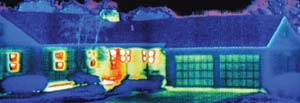
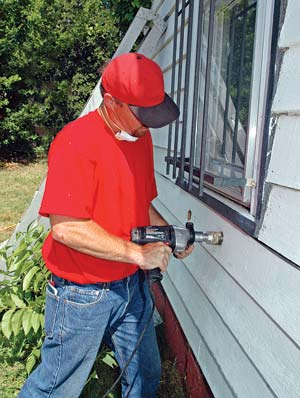
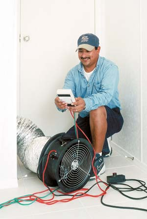
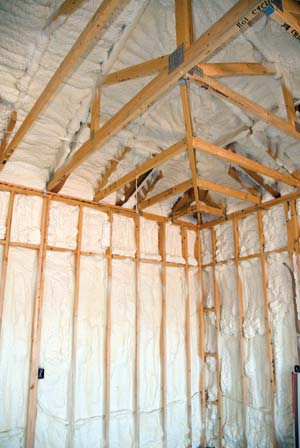
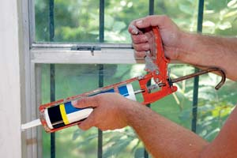
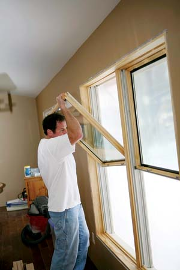
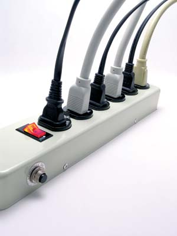

A few years ago, one of my neighbors said, “I really admire what you do, Dan, but I couldn’t live like that.” She was referring to my superefficient home powered by wind, sun and wood. Many other individuals I’ve met have reacted similarly, thinking that living on home-based renewable energy necessarily means doing without.
But the fact is, my children and I enjoy virtually all the amenities of modern life, including two televisions, a stereo, a microwave oven, a blender, a computer, power tools and more. We don’t leave lights on day and night, but we live well using only a fraction of the energy most households use. You can, too.
Energy conservation doesn’t mean living an austere life. It means eliminating massive amounts of waste in our homes and lifestyles. It means staying warm in the winter and cool in the summer.
Energy conservation will slash your energy bills and help create a sustainable lifestyle. Not only that, but if you are seriously thinking about installing a solar or wind system in your home, energy conservation needs to be your first step. You’ll be able to buy a smaller renewable energy system, which would be much less expensive and integrate more easily with your existing home.
Energy conservation entails two separate but complementary strategies: frugality and efficiency. Frugality involves behaviors or actions that reduce energy use - turning off lights, televisions and stereos in unoccupied rooms and taking shorter showers to reduce hot water use are good examples.
The efficiency principle, on the other hand, calls on us to wring as much useful energy as possible from our energy supplies; examples include adding insulation to our attics or purchasing energy-efficient appliances. The savings can be quite significant.
Some utilities offer financial incentives to customers for energy efficiency measures they undertake. Why? Because by reducing the demand for electricity, local utilities can reduce their need for additional capacity. They may even avoid the need to build expensive new power plants.
Homes account for about one-fifth of the United States’ total annual energy demand. Heating and cooling the interior of our homes consumes the largest portion of residential energy - about 44 percent. Lighting, cooking and appliances (other than the refrigerator) consume one-third of our energy. Water heating consumes 14 percent and the refrigerator about 9 percent. Although each home is different, this data alerts us to the big energy consumers, and can help us target the greatest potential savings.
Retrofitting a home for energy efficiency will save you money. However, it will require some effort on your part. You should start with an energy audit. First, do a simple visual inspection to locate the most obvious leaks - gaps between doors and door frames, or large openings in the building envelope that let cold air in when the wind’s blowing and hot air out when the furnace is running. These can be sealed immediately and will often yield enormous benefits. Then, on a windy day, perform a search-and-destroy mission for smaller, less obvious leaks. Use incense, a smoke stick or simply your hand to detect drafts.
If this is more work than you’d like to undertake, or if you’re feeling uncertain, you can hire a qualified professional energy auditor to perform the inspection for you. You’ll find them in the business pages under “Energy Conservation and Management Services” or “Home Inspection,” or see the member directory.
Professional energy audits. Energy auditors perform simple visual inspections for about $75 to $100, but can perform more sophisticated and expensive tests on your home, such as a blower door test, duct leakage test and comprehensive computer energy analysis. The cost of the complete energy analysis is typically $300 to $500, give or take. That may seem like a lot of money, but this analysis is well worth the expense - you’ll save much more than that over time if you follow up on the auditor’s recommendations.
Energy auditors provide a written report that lists potential energy improvements. The report includes recommendations for sealing cracks and openings in the building envelope - that is, weatherizing a home. It’s also likely to call for additional insulation in walls, ceilings and perhaps floors, especially over crawl spaces or unheated basements. The report may recommend insulation for hot water lines from the water heater to various faucets in the house; efforts to seal and insulate ducts that transport hot and cold air from heaters and air conditioners; and replacement of old, inefficient appliances.
Rather than hire a professional to perform tests and retrofit your home, you may want to contact your local utility to see if they can help. Many efficiency-conscious utilities offer free or low-cost energy audits. Another option is to contact nonprofit organizations that offer energy audits and retrofits in your area; many of them focus on the residences of low-income families who can’t afford high utility bills, yet are unable to afford professional energy upgrades.
After reviewing the problems (you could see them as opportunities) identified in your energy audit, you have two options: Roll up your sleeves and do the work yourself, or hire an energy retrofitter to perform the necessary work for you. Although hiring a professional will cost substantially more than doing the work yourself, a qualified expert is often worth the extra expense. They perform the work quickly and efficiently with a minimum of ineffective repairs.
A professional energy retrofitter can even access high-quality materials that often aren’t sold in local hardware stores or building supply outlets, such as duct mastic, a paste used to seal leaky air ducts in heating and air conditioning systems. Using high-quality products helps the improvements last a long time.
Seal cracks. Sealing cracks in the building envelope is one of the easiest and most cost-effective measures a homeowner can take. For those who want to do the work themselves, I strongly recommend that you purchase the best caulk you can find. Don’t skimp on caulk just to save a few bucks per tube. Ask a knowledgeable hardware store employee which products are the best and then spend the extra money.
For small gaps, around windows for example, use a high-quality silicon paintable caulk. Larger gaps can be filled with expandable foam, which comes in spray cans. I use Great Stuff insulating foam sealant (red can) for smaller openings - those too large for silicon caulk - and Great Stuff insulating foam sealant (blue can) for the largest openings. Very large openings can also be filled with backer rod, a flexible material that is stuffed into openings.
In your quest to tighten up your home, you will also likely need to seal wall switches and electrical outlets. They can be easily sealed by installing small, inexpensive foam gaskets, which are available in local hardware stores and building supply stores. To seal a switch or electrical outlet, even on inside walls, remove the cover plate, then insert the foam gasket and screw the cover plate back in place.
Install insulation. Another energy-saving strategy is to add insulation. As a rule, the older your home, the more insulation you’ll need to add. Professional energy auditors will likely recommend increasing insulation to meet local building codes. Although such changes will increase the energy performance of your home and sharply decrease utility bills, I strongly recommend that homeowners go beyond the insulation standards in most jurisdictions. Even if your local building department has recently upgraded its building code, the best energy efficiency is achieved when builders and homeowners go beyond the required levels by at least 30 percent to 40 percent. That’s what top-notch solar builders are using in their homes. Insulating well above the energy code will cost a few hundred dollars more than merely meeting code, but is worth it in the long run.
Insulate wall cavities. Many older homes have no insulation at all in their exterior walls. Filling these cavities with insulation is, therefore, vital to achieving comfort and savings. Fortunately, there are several ways to do this. Most often, installers drill large holes in the siding from the outside or in the drywall from the inside, accessing each cavity (the space between adjacent studs) individually. They then either blow in cellulose insulation (made from recycled newspapers) or apply a liquid foam product that expands to fill the stud cavity. The holes used to access the interior of the walls are then repaired and repainted. Wall insulation retrofits can be difficult and are generally best left to experienced professionals.
Insulate ceilings. Ceiling insulation must also be fortified in old and new homes. Even if your home was built in the 1990s, consider adding more ceiling insulation. Adding insulation is easy in homes with attics. You simply climb into the attic through an access hatch usually located in a hallway or a back room. When you’re in the attic, you can lay down fiberglass batts or blow fiberglass or cellulose over the existing insulation. Be sure to walk on the rafters so as not to fall through the ceiling.
When retrofitting ceiling or attic insulation, I recommend bringing the R-value well above local building codes - to R 50 or R 60 - in most climates. (R-value is a measure of resistance to thermal flow; the higher the number, the better it blocks heat movement.) In cold climates, you may want to boost insulation even more.
If you don’t have an attic, your home was probably built with a closed ceiling design, and installing additional insulation can be difficult, if not impossible. But all is not lost. You could install additional insulation by framing in a second ceiling with 2-by-4s and adding insulation to the cavities. Or you could apply large sheets of foam insulation. After the insulation is in place, you’ll need to attach a vapor barrier and new drywall.
Upgrade windows. If your windows are old and leaky, were manufactured with aluminum or steel frames or are the single-pane variety, you should consider a complete upgrade. The cheapest and easiest upgrade for energy-wasteful windows is to install storm windows. Storm windows are installed on the outside of existing windows where they perform two vital functions. First, storm windows reduce air leakage. Second, they create a dead airspace that reduces heat loss. These simple, relatively inexpensive upgrades can decrease heat loss and increase interior comfort at about a quarter of the price of a complete window upgrade.
A more costly option is to tear out existing windows and replace them with high-quality, energy-efficient models. Window replacements cost quite a lot - potentially $8,000 to $10,000, or even more for larger homes. The payback period, the time in which this investment pays for itself in energy savings, is typically about 10 to 12 years assuming energy costs do not rise at all. Although this upgrade is expensive, remember that a 10-year payback represents a 10 percent financial return on your investment. Moreover, the gains in comfort are immediate, and rising energy costs will increase your return on investment.
Another simple solution is to install a second or third pane of glass in the existing window frame. While effective, this method is costly and time-consuming. I’ve devised another option - one that is more aesthetically appealing than sheet plastic and much cheaper than installing additional panes of glass. My solution is to install Plexiglas inserts along the inside surface of existing windows. Plexiglas is a clear, durable polycarbonate plastic. It can cost a tenth of the price of some window glass, and usually won’t yellow in sunlight. It also conducts heat more slowly than glass, which results in a warmer surface and thus less heat loss.
Choose efficient appliances. You can achieve huge reductions in energy consumption by replacing energy-consuming appliances and other devices - especially heating and cooling equipment, water heaters, refrigerators and washing machines - with newer, energy-efficient models. The job is a lot easier with consumer labels required by the U.S. and Canadian governments, which list pertinent energy data on each model. Energy Star labels indicate the best choices.
Choose efficient lights. One of the easiest ways to reduce energy bills in our homes is to install compact fluorescent light bulbs (CFLs), which convert about 20 percent of the electricity flowing through them into light. A standard incandescent light bulb converts only 5 percent of the electricity flowing through it into light. CFLs come in several different shapes and sizes, so they fit into a wide variety of light fixtures and lamps. Compact fluores cents are currently the hands-down favorites when it comes to energy efficiency, although they may be replaced by more efficient light emitting diode (LED) lights in the not-too-distant future.
Save hot water. If your water heater is old and decrepit, replace it with an energy-efficient model. You should consider an on-demand or instantaneous water heater, which is a larger initial investment, but will save energy (and money in the long run).
If your water heater still has a few good years left, you can cut fuel bills by making a few adjustments. The first thing you should do is check the water temperature. To do this, turn on the hot water and let it run for a minute or two. Next, hold a thermometer under a faucet. If the temperature is above 120 degrees Fahrenheit, turn the water heater’s temperature down. Studies show that you don’t need water to be hotter than 120 degrees to wash dishes and clothes. This is sufficient to kill bacteria.
If you have a gas- or propane-powered water heater, simply turn the dial on the unit to a lower setting, then wait a day or two and check the temperature again. If the temperature is still too high, lower it again. For electric water heaters, you’ll need to remove the top and bottom covers on the side of the unit, one for each heating element, and turn the temperature settings down using a screwdriver.
After lowering the water temperature setting, you should install an insulated water heater blanket over the tank. Water heater blankets cost as little as $15, and pay for themselves in less than a year, depending on your family’s hot water consumption. You can also save hot water by installing water-efficient shower heads.
Eliminate phantom loads. Phantom loads (also called vampire or ghost loads) are the electricity used by appliances and other electronic devices when they’re not in active use. Your instant-on television, for example, consumes electricity even when it’s off. Why? To keep the circuits buzzing, so that when you click the power button on the remote, the TV hums to life instantly.
Other examples of phantom loads include the power adapters (that heavy little box right by the power plug) for cordless phones, answering machines and keyboards; microwave ovens and coffee makers equipped with LED clocks; stereos, radios, audio receivers, satellite receivers and power strips; even hard-wired smoke detectors and some GFIs (the electrical outlets with built-in circuit breakers). And don’t forget your cell phone charger; it may draw power even when the phone isn’t hooked in or after the phone is fully charged.
Your home is full of phantom loads that, although tiny on their own, collectively consume significant amounts of electricity over a year’s time. When I first moved into my solar home, I discovered that there were about 125 watts of cumulative ghost loads. That’s the equivalent of two 60-watt light bulbs running 24 hours a day, 365 days a year!
I set out to eliminate the phantoms from my life, and so can you. Make a note of each phantom load, and then devise a strategy to get rid of them one by one. For example, you can plug televisions, stereos, microwaves and similar electronic devices into power strips that can be switched off easily when the electronic device or appliance is not in use.
You can gradually reduce your energy consumption by making your home more efficient and simply avoiding wasteful use of electricity. The goal isn’t to live without conveniences, but to live wisely.
Heating and cooling: 44%
Refrigerator: 9%
Lighting, cooking and other appliances: 33%
Water heating: 14%
ORGANIZATIONS
American Council for an Energy-Efficient Economy; 202-507-4000
Find ways to save energy and learn about U.S. energy policies.
Energy Star program; 888-782-7937
Learn about Energy Star-certified homes, and energy-efficient appliances.
Energy Efficiency and Renewable Energy Clearinghouse
Find consumer information, tips for renters and recommendations for how much insulation to use in your climate.
FINANCIAL INCENTIVES
Contact your utility or state energy office to learn more about local incentives. For information on federal tax credits visit The Tax Incentives Assistance Project; for information on state incentives visit the Database of State Incentives for Renewables & Efficiency.
HOME-REPAIR PRODUCTS
Many hardware stores carry supplies for weatherizing your house and repairing ducts, or try these online retailers:
AM Conservation Group; 800-777-5655
Energy Federation Inc.; 508-870-2277
HOME ENERGY AUDITS
Residential Energy Services Network; 766-806-3448
Find energy auditors in your area.
Home Energy Saver
Take this Web-based survey to get suggestions for improving efficiency.
|
ISTOCKPHOTO/OLEG PRIKHODKO Energy-efficient windows play a big role in reducing home energy consumption. |
ANDERSEN WINDOWS, INC. Windows allow natural light (and heat from the sun) into a room. |
 INFRASPECTION INSTITUTE Infrared imaging can pinpoint places where warm air is escaping. Sealing air leaks is a sure way to save energy and money. |
|
 ISTOCKPHOTO/DAVID LEWIS Older homes can be retrofitted with blown-in insulation. |
 CHARLIE CASTILLEGA/NREL Technicians can check your ductwork for leaks. |
 ISTOCKPHOTO/JOE BELANGER Installing insulation can improve the energy efficiency of your house. |
|
 ISTOCKPHOTO/DAVID LEWIS Sealing air leaks can make your house more energy efficient and more comfortable. |
 ISTOCKPHOTO/GEORGE PETERS As energy prices increase, energy-efficient replacement windows can pay for themselves in less than 10 years. |
 ABERENYI/FOTOLIA.COM Power strips let you turn off power to electronics when not in use, reducing “phantom loads.” |